Deployment
Enterprise Video Surveillance Infrastructure — Large Supermarket Rack Deployment
Server Rack · VMS · PoE Network — Dell PowerEdge R750xs / Mikrotik / Dahua, 2026
Full-store surveillance coverage for a large supermarket is not a single
device installation; it is a small data centre. Dozens of cameras
recording continuously generate a sustained storage and processing load
that a consumer NVR was never designed to handle, so the project called
for genuine enterprise hardware, assembled, wired, and configured to
run reliably around the clock.
At the centre of the build sits a Dell PowerEdge R750xs
rack server, configured with a mix of 1.2TB SAS and 16TB SATA drives to
balance fast indexing storage against the long-term capacity needed for
full-store recording retention. The server was installed with
Windows Server as the platform for the video
management software, with the operating system configured, patched,
and hardened before the VMS application was installed and connected
to every camera on the network.
The network layer supporting the server was built from two
Dahua PoE switches and a Mikrotik router
handling routing and network segmentation between the surveillance
VLAN and the rest of the store's infrastructure. CAT6 cabling
was pulled and terminated from the rack to every camera position across
the supermarket floor, covering dozens of cameras providing full-store
coverage; every run labelled and documented at both ends as part of
the cabling schedule. The PoE switches deliver both data and power to
each camera over the same cable run, simplifying the installation
considerably compared to running separate power circuits to each
mounting point.
Power continuity for the entire rack is handled by a dedicated
UPS unit, protecting the server, switches, and router
against outages and short power interruptions that would otherwise
interrupt continuous recording. All active rack equipment, server,
switches, UPS, and patch infrastructure, was mounted using vertical
cable management arms throughout the rack height, keeping the patch
cabling organised and serviceable rather than left loose inside the
enclosure.
Once the hardware was racked and wired, the configuration phase brought
the system to life: server network settings, the VMS
application, and every individual IP camera were configured
in sequence; assigning addressing, registering each camera into the
VMS, setting recording schedules, and verifying live feed and playback
quality from each one before the system was signed off. Basic
cybersecurity checks were applied across the server, switches,
and router before handover, including default credential changes and
access restriction on management interfaces. The project closed with
full technical documentation and a completed service report,
and the corresponding ticket closed in the company's field management
system.
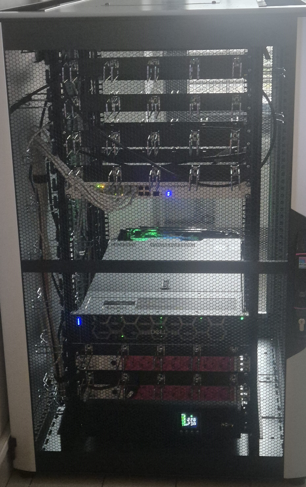
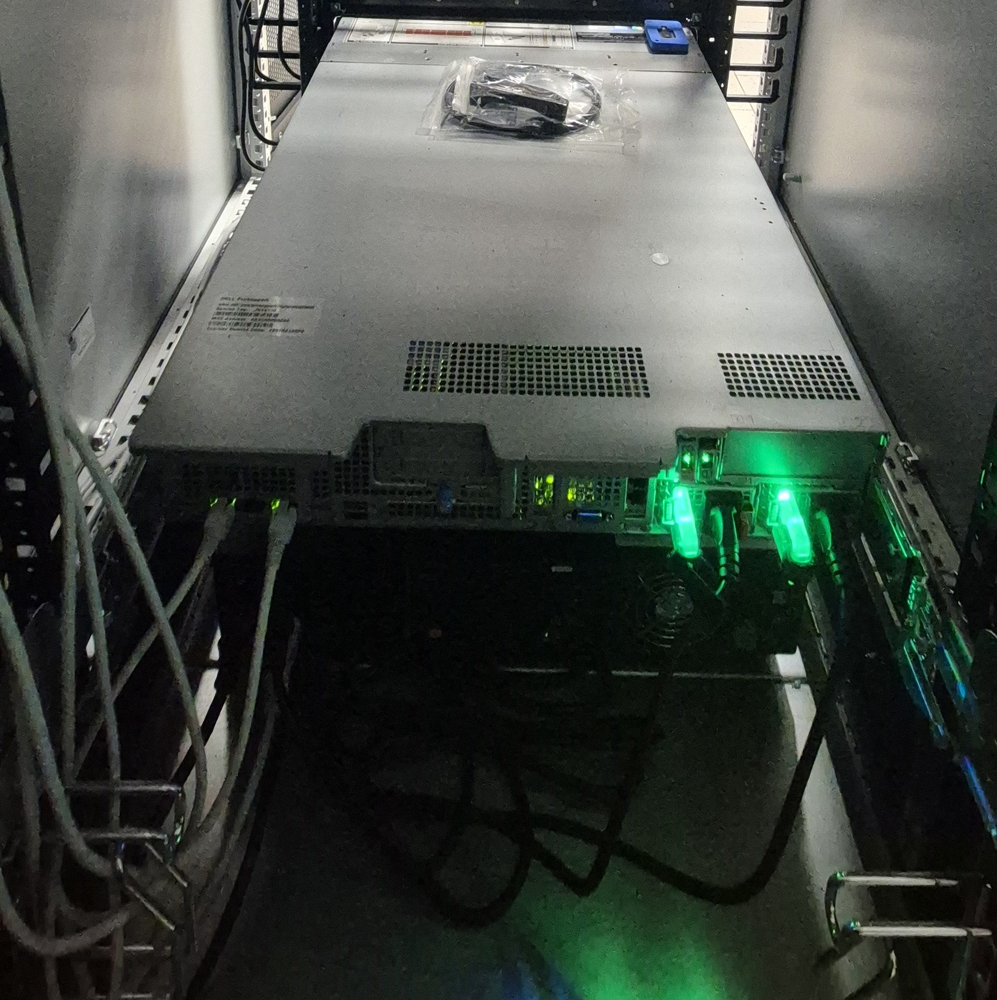
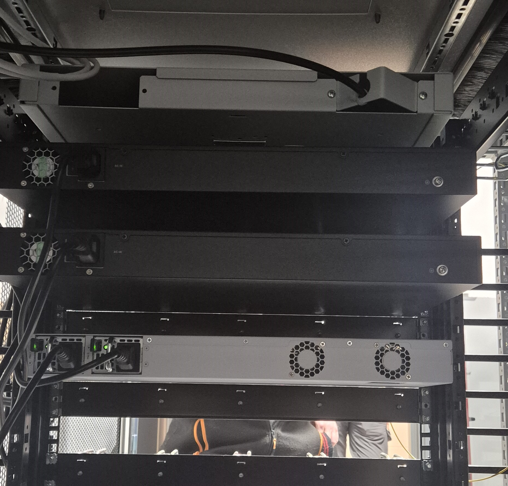
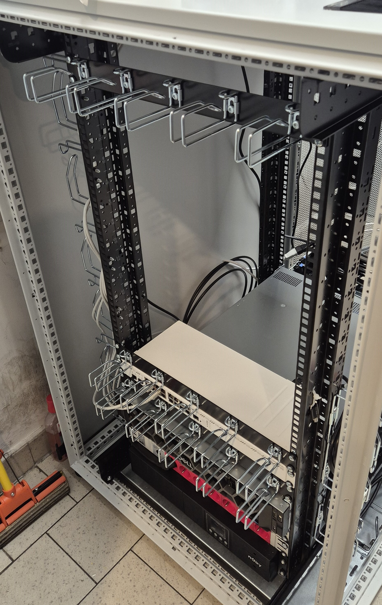
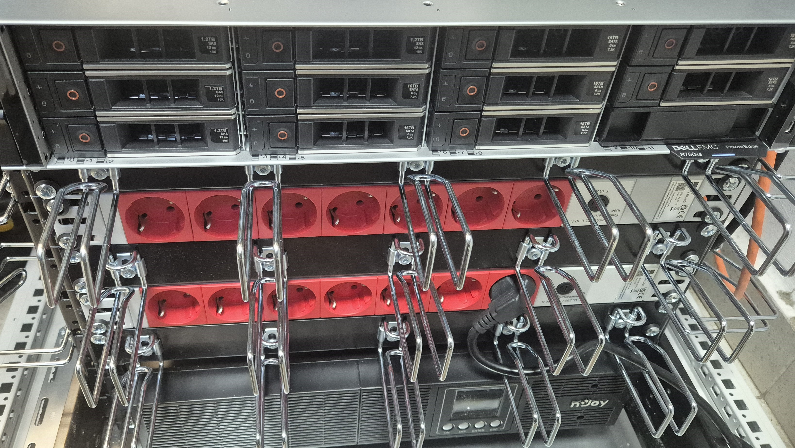
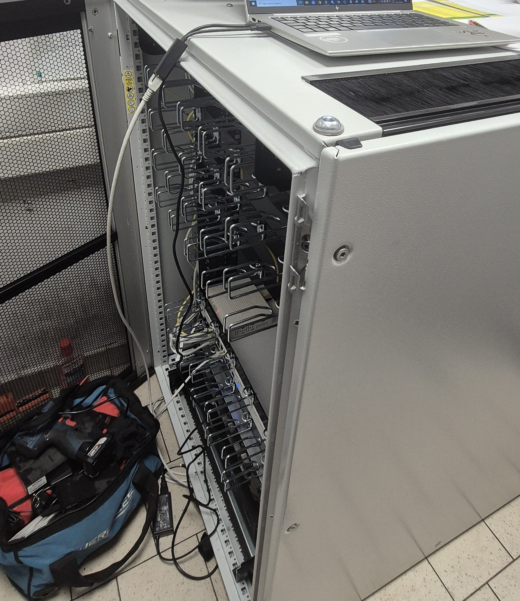
- Deployed a complete enterprise video surveillance infrastructure for a large supermarket; racking and configuring a Dell PowerEdge R750xs server, two Dahua PoE switches, a Mikrotik router, and a dedicated UPS to support full-store camera coverage across dozens of cameras.
- Installed and configured Windows Server on the Dell PowerEdge R750xs as the platform for the video management software, hardening the operating system before installing and connecting the VMS application to the camera network.
- Pulled and terminated CAT6 structured cabling from the rack to every camera position across the supermarket floor, labelling and documenting each run at both ends as part of a complete cabling schedule covering full-store surveillance coverage.
- Installed two Dahua PoE switches to deliver data and power to every camera over a single cable run, and a Mikrotik router to handle routing and VLAN segmentation between the surveillance network and the rest of the store's infrastructure.
- Configured every IP camera individually within the VMS; assigning network addressing, registering each unit, setting recording schedules, and verifying live feed and playback quality before sign-off.
- Installed a dedicated UPS unit to protect the server, switches, and router against power interruptions, ensuring continuous recording uptime for the full surveillance system.
- Organised the complete rack build with vertical cable management arms throughout, keeping all patch cabling structured and serviceable rather than loose within the enclosure.
- Applied basic cybersecurity checks across the server, switches, and router before handover; including default credential replacement and access restriction on all management interfaces.
- Closed the project with complete technical documentation and a service report, with the corresponding ticket closed in the company's field management system.
Extension
Network Infrastructure Extension — Heavy Metal Forming Industrial Facility
Fibre Optic Backbone · Structured Cabling · Media Conversion — CAT6 / SFP, 2025
Extending a network in a heavy metal forming facility is a problem that
begins long before a cable reel is opened. The production floor spans
hundreds of metres, overhead cranes carry coils of raw steel on rails
that run the full length of the building, rolling mills and forming
machines generate significant electromagnetic interference, and the
distances involved simply exceed the reliable range of copper Ethernet.
The solution is not more cable; it is a different kind of cable.
This project involved the extension of an existing network
infrastructure across the active production floor of a large
metal forming plant; a facility where steel coils, bar stock, and
sheet material are processed continuously by heavy machinery under
overhead gantry cranes. The existing network reached the edges of the
production area; the brief was to extend it into the floor itself,
reaching switch distribution points deep within a space where copper
cabling would be degraded by electromagnetic noise and limited by
distance.
The backbone of the extension was built on fibre optic cabling,
pulled from the existing network termination points and routed through
the facility to new wall-mounted switch enclosures
installed at strategic distribution points across the floor. At each
enclosure, a NextWave media converter (10/100/1000Base-TX to
1000Base-FX) was fitted to bridge the fibre backbone to the
local copper Ethernet ports of the switch; the SFP fibre port on the
converter accepting the incoming optical signal and presenting a
standard gigabit RJ45 interface to the switch and downstream devices.
SFP transceivers were selected and inserted to match
the fibre type and link distance at each point, ensuring the optical
budget was met across the full run before any connection was finalised.
From each enclosure, copper structured cabling was
pulled to the local access points and devices that the extension was
designed to serve; each run routed carefully to avoid the EMI-heavy
zones around the forming machines and crane rail infrastructure.
The Rittal-style main rack, already housing the plant's Siemens
automation hardware, Dell server, and UPS, received the new network
extension connections cleanly at its existing switch layer without
disruption to the live automation network.
Every link was tested and measured after termination;
optical power levels at each fibre run, copper continuity and signal
quality at each patch point, and end-to-end connectivity confirmed
from each new switch enclosure back to the core. Basic
cybersecurity checks were applied to each new switch
before it was placed into service, covering default credential changes
and access port restrictions, to maintain the security posture of a
network that sits alongside active industrial control systems.
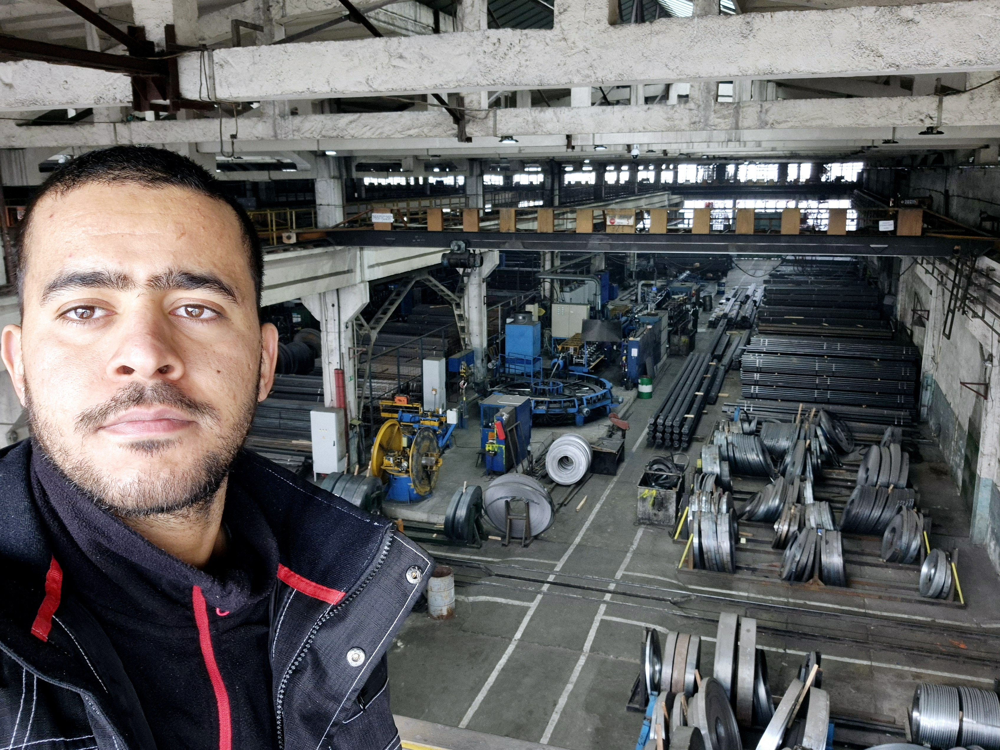
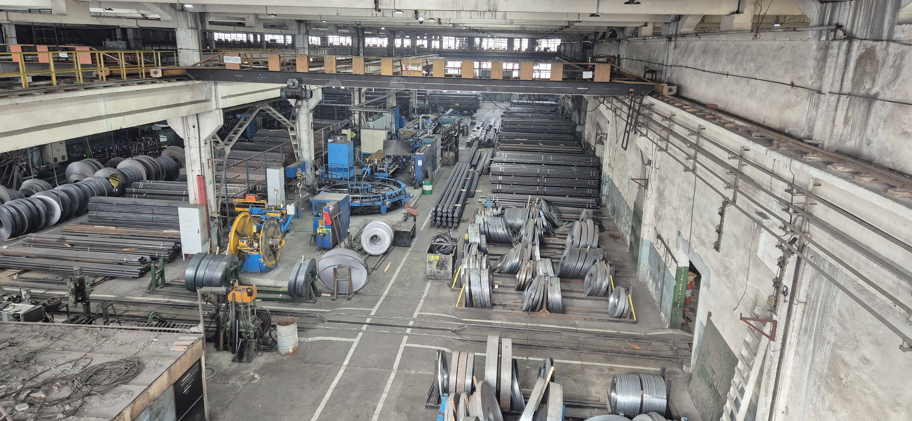
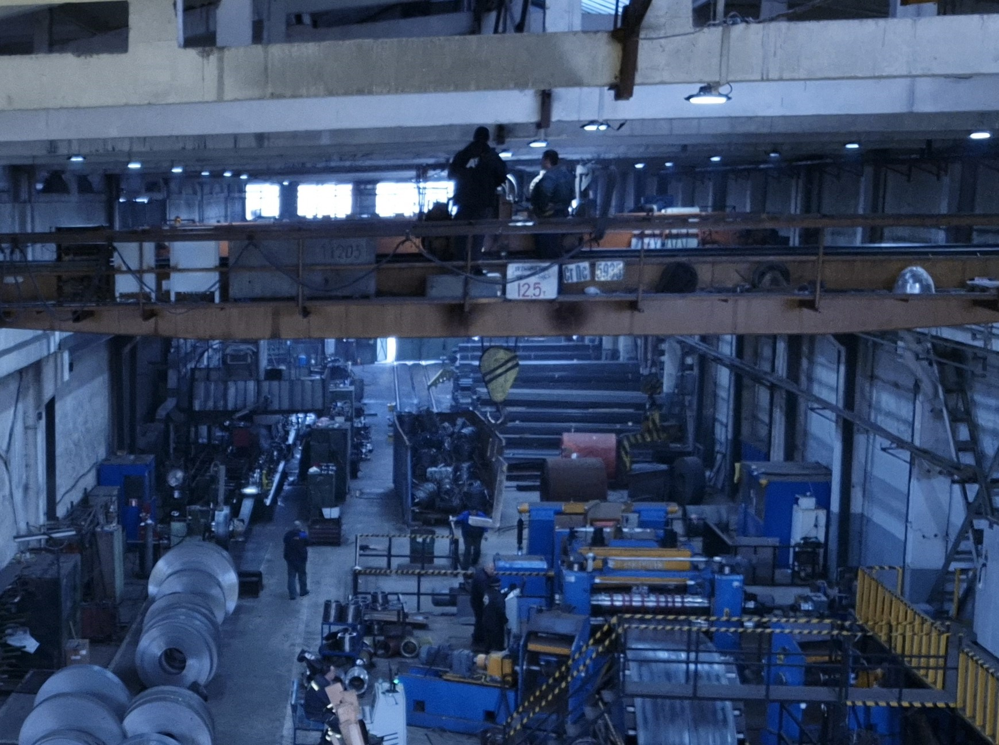
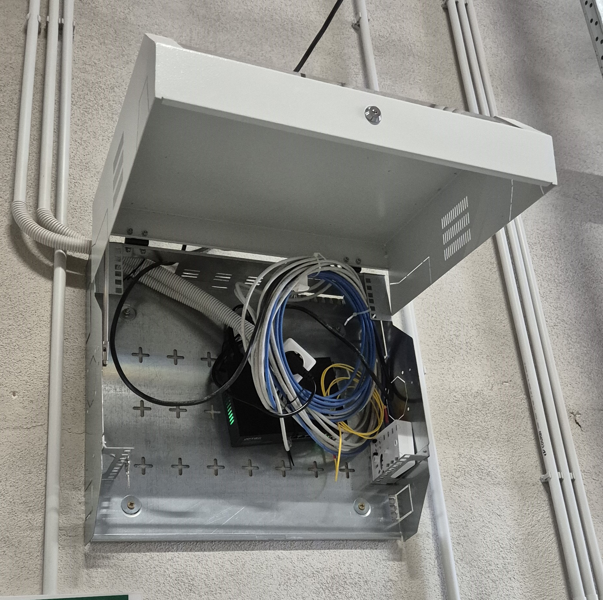
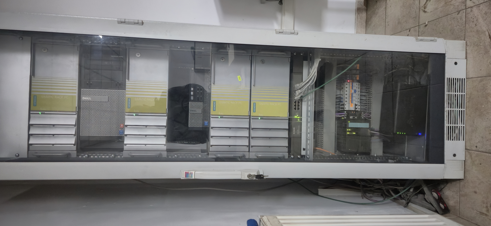
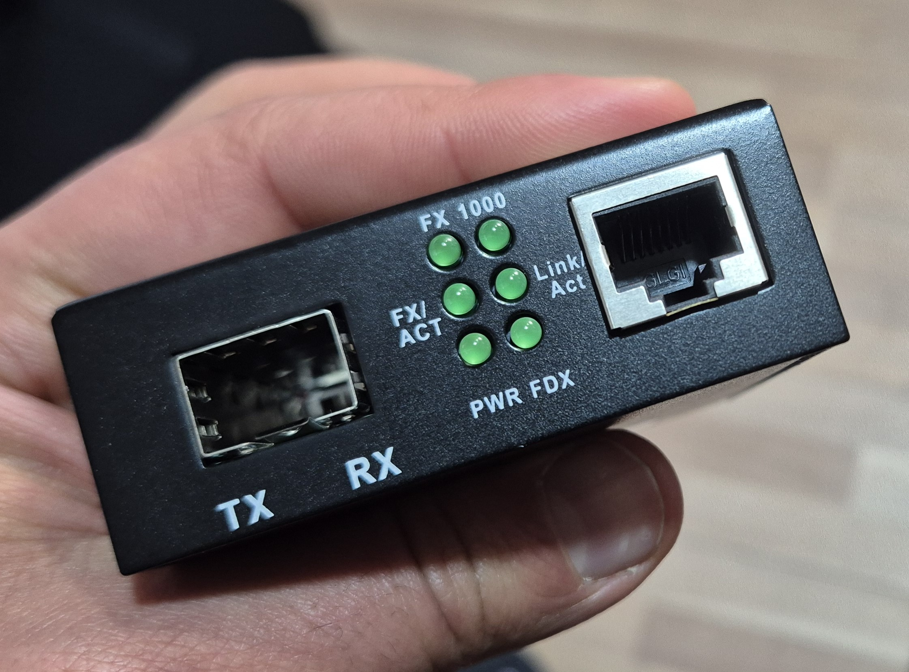
- Extended the network infrastructure of a large heavy metal forming industrial facility; deploying a fibre optic backbone to bridge the distance and EMI limitations of the production floor, where copper Ethernet alone could not reliably serve the required extension points.
- Pulled fibre optic cables from existing network termination points through the facility to new distribution enclosures across the production floor, routing carefully to avoid interference zones around rolling mill machinery and overhead crane rail infrastructure.
- Installed and configured NextWave 10/100/1000Base-TX to 1000Base-FX media converters with SFP transceivers at each floor enclosure, converting the optical backbone signal to a gigabit copper interface for local switch and device connectivity at each distribution point.
- Selected and inserted SFP transceivers matched to the fibre type and link distance at each point, verifying optical budget compliance before finalising each backbone connection.
- Pulled CAT6 copper structured cabling from each new switch enclosure to local access devices, completing the last-mile connectivity from each floor distribution point to the endpoints the extension was designed to serve.
- Tested every link after termination; measuring optical power levels on each fibre run and verifying copper signal quality and end-to-end connectivity from each new enclosure back to the core rack using dedicated network measurement tools.
- Applied basic cybersecurity hardening to each new switch before service entry; changing default credentials and restricting access ports to maintain the security posture of a network coexisting with active Siemens industrial automation systems.
Project
Industrial IP Surveillance Network — Chemical & Processing Plant
Structured Cabling & IP Camera Deployment — CAT5e FTP / NVR, 2026
Installing a surveillance network in an office building and installing
one in a chemical processing plant are two different engineering problems.
The environment is harsher, the heights are greater, the machinery is
active, and the safety constraints are non-negotiable from the moment
you arrive on site.
This project involved the full deployment of an IP camera
surveillance network across the production and exterior areas
of a large chemical and processing facility; covering indoor production
floors where robotic palletising arms and industrial conveyors operate
continuously, and outdoor areas along the building's upper facade where
camera positions required working at significant height.
The cabling infrastructure was built on CAT5e FTP structured
cabling, chosen for its shielded construction to maintain
signal integrity in an electromagnetic environment typical of heavy
industrial machinery. Cable runs were planned and routed through the
facility to reach each camera position; across production ceilings,
down exterior walls, and into the network rack housing the
on-site NVR that serves as the central recording
and monitoring point for the entire system.
The most technically demanding aspect of the installation was the
outdoor facade work. Camera positions on the upper exterior of the
plant building required the use of an articulated aerial
work platform (cherry picker) to reach mounting heights
inaccessible by ladder. All at-height work was conducted under strict
industrial site safety procedures; PPE, two-person
working discipline with a ground-level spotter, and coordination
with the plant's own safety officer before the platform was raised
at each position. The cable run at each exterior point was fed down
the building facade and routed inside to the rack.
Each IP camera was configured on the local TCP/IP network
after mounting; assigned a static address within the surveillance VLAN,
connected to the NVR, and verified for image quality, viewing angle,
and recording continuity before the position was signed off. Network
connectivity and signal quality were tested and measured
at each camera drop using dedicated tools before the run was terminated
in the rack. The completed system delivered full coverage of the
production floor, robotic work cells, and exterior perimeter,
all feeding into a single on-site NVR with full-time recording
and remote monitoring capability.
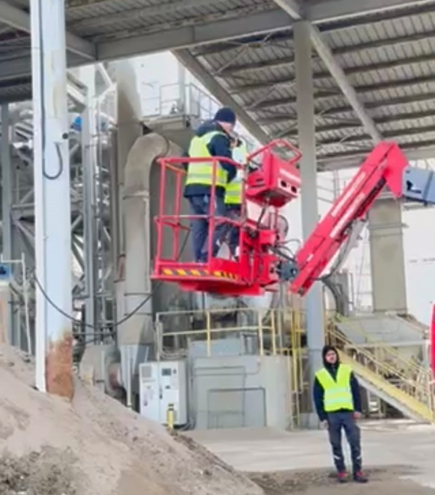
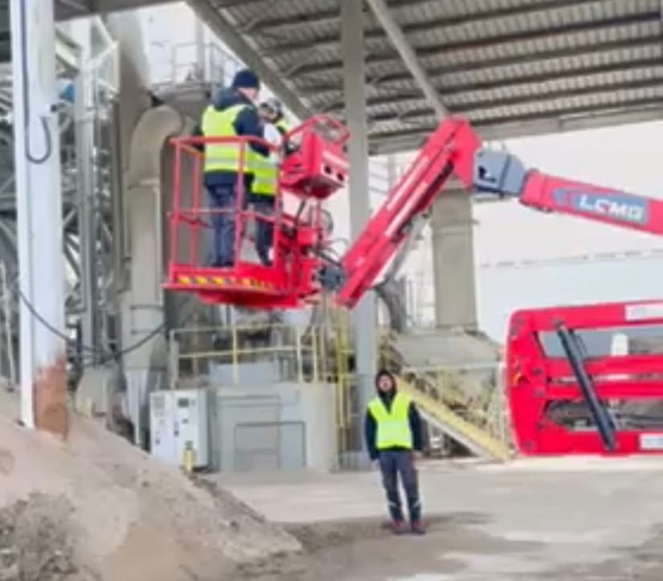
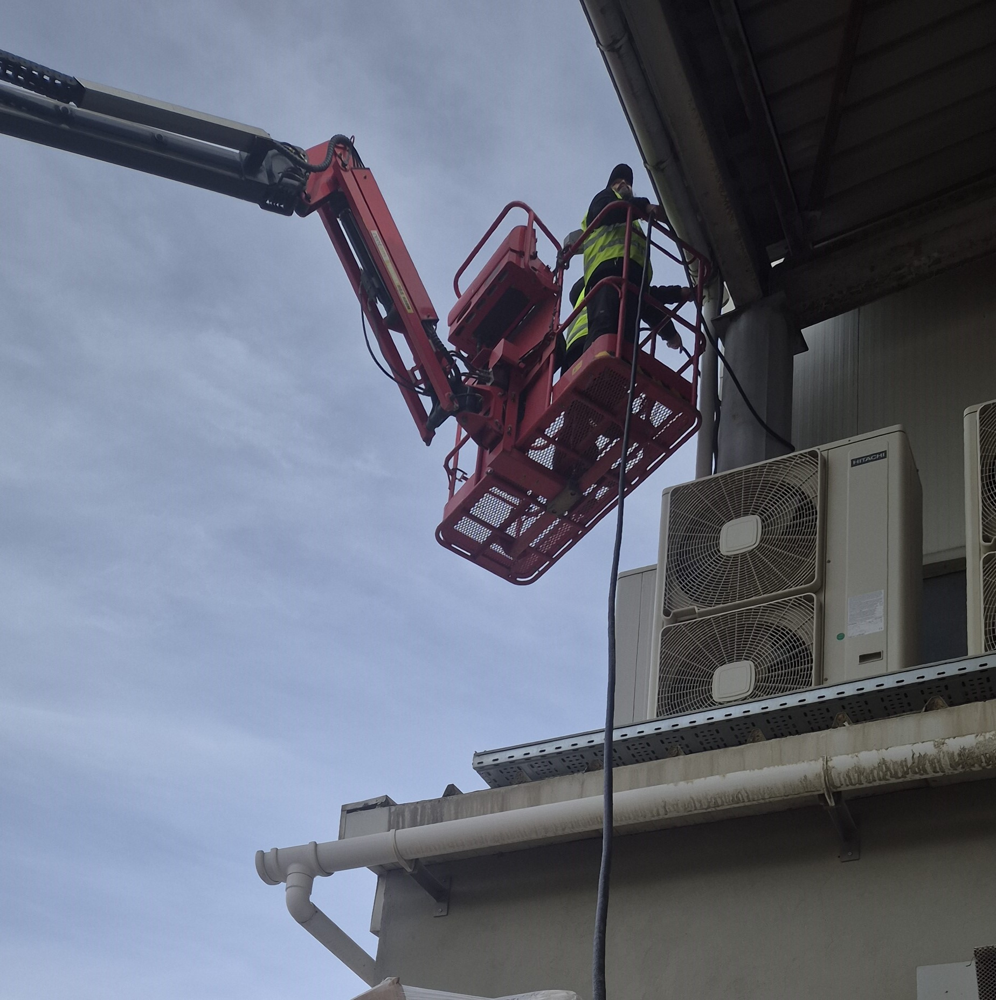
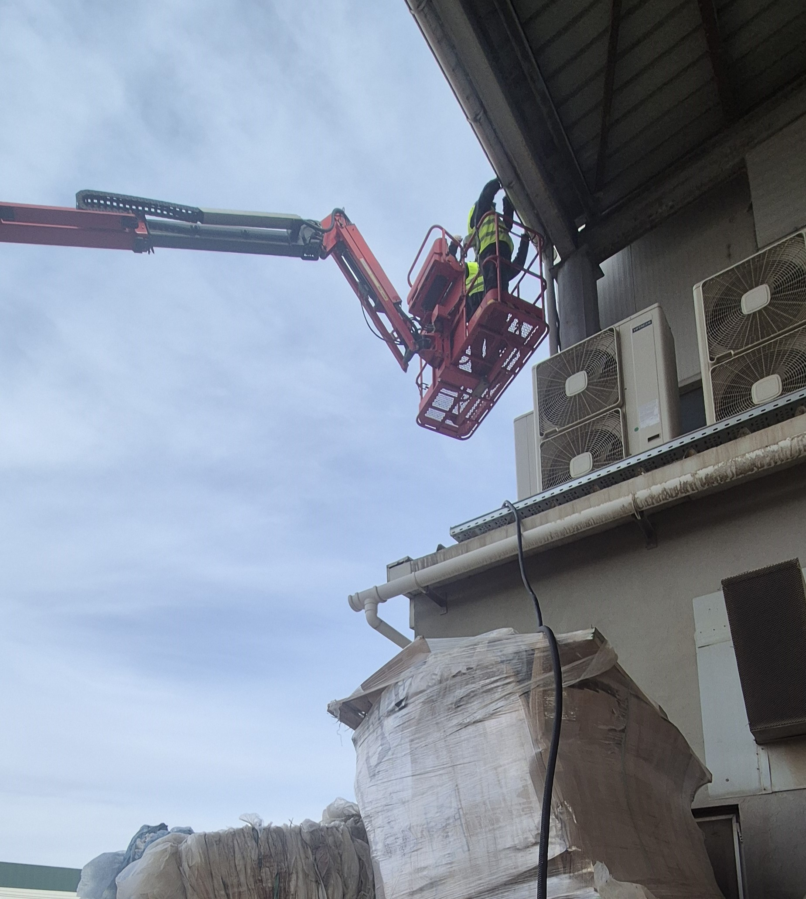
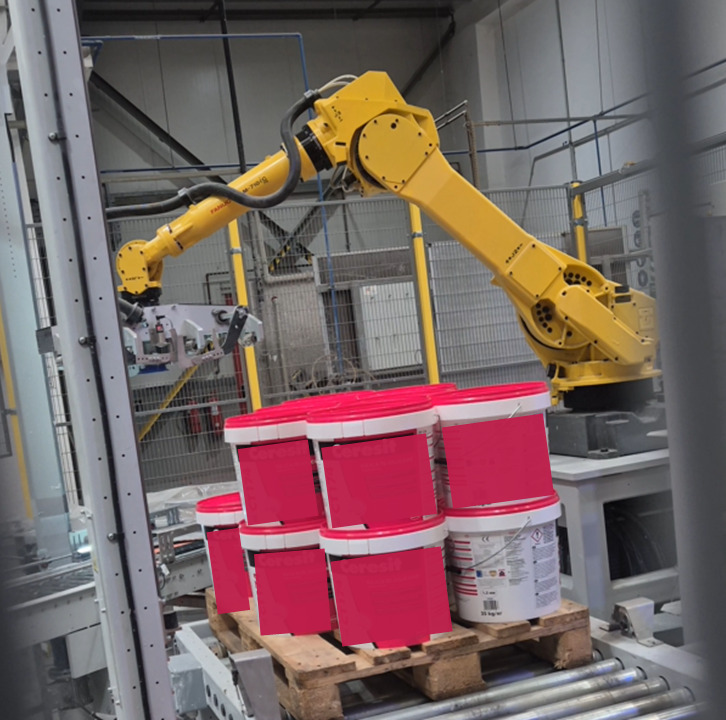
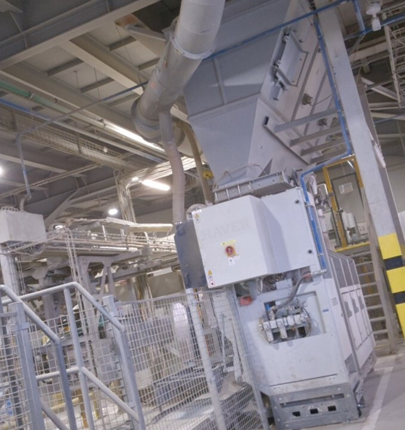
- Deployed a complete IP camera surveillance network across a chemical and processing plant; covering active production floors with robotic palletising cells and industrial conveyors, as well as the building's upper exterior facade, all feeding into a central on-site NVR.
- Pulled and routed CAT5e FTP shielded cabling throughout the facility; selecting FTP construction specifically for signal integrity in the electromagnetic environment generated by heavy industrial machinery and variable-frequency motor drives.
- Used an articulated aerial work platform (cherry picker) to reach camera mounting positions on the upper exterior of the plant building, working at significant height alongside HVAC rooftop equipment inaccessible by any other means.
- Maintained strict industrial site safety procedures throughout all at-height operations; PPE compliance, two-person working discipline with a dedicated ground-level spotter, and pre-task coordination with the plant safety officer before each platform raise.
- Configured each IP camera on the TCP/IP network after mounting; assigning static addresses, connecting to the NVR, and verifying image quality, viewing angle coverage, and recording continuity before signing off each position.
- Tested and measured network connectivity and signal quality at every camera drop using dedicated tools before rack termination, ensuring each cable run met performance requirements in the industrial environment prior to final installation.
- Installed the network rack and patch panel as the central termination point for all camera feeds, structured and labelled to allow the NVR to receive, record, and provide remote monitoring access across the full camera network.
+ 2026 Maint.
Solar-Powered Cloud Surveillance System — Off-Grid Installation & Field Maintenance
IP Camera · Solar Power · Cloud Recording — Steca Solsum 1010 / NetBox, 2024–2026
Some surveillance requirements exist precisely where infrastructure does
not. No mains power. No nearby network cabinet. Just open terrain, a
security need, and the expectation that the camera will be recording
and uploading to the cloud regardless of the time of day or the season.
In 2024, we designed and deployed a fully autonomous solar-powered
IP surveillance station for a client with exactly this requirement.
The system integrates three layers that must work together without human
intervention: power generation and storage, local electronics management,
and cloud-connected video recording.
The photovoltaic panel mounted at the top of the mast
serves as the primary power source during daylight hours, simultaneously
powering the camera and the NetBox cloud recorder while channelling surplus
energy into a 12V sealed lead-acid battery housed in the
weatherproof enclosure below. At dusk, the Steca Solsum 1010
solar charge controller detects the drop in panel output and
automatically switches the load to battery power, ensuring the camera
remains operational throughout the night without any manual intervention.
At dawn, the cycle reverses; solar takes over, the battery begins
recharging, and the system returns to its daytime configuration
autonomously.
The network side of the installation was equally deliberate. The camera
was configured with a static IP address and connected
to the NetBox cloud recording unit via a local TCP/IP
link; the NetBox handling cellular or network uplink to the company's
cloud storage platform so that footage is accessible remotely in real
time without requiring on-site NVR hardware. All device addressing,
stream parameters, and recording schedules were set and verified before
the enclosure was sealed and the system handed over as live.
In 2026, the client reported a system outage; the camera had gone dark
overnight and was not recovering during the day. Working under
time pressure with a surveillance gap already open,
the team drove to site and began a structured fault-finding process.
Voltage measurements across the power circuit quickly pointed to the
charge controller; the Steca Solsum 1010 was producing no
output to the load terminals despite the panel generating
correctly, confirming an internal controller fault rather than a panel,
battery, or wiring issue. The faulty unit was removed from the enclosure
in the field, a replacement controller was fitted and wired,
and the system was brought back online; camera reconnected, cloud
recording confirmed active, and the circuit verified across all three
terminals before the enclosure was closed. The maintenance visit was
closed with a completed service report and ticket
logged in the company's field management system.
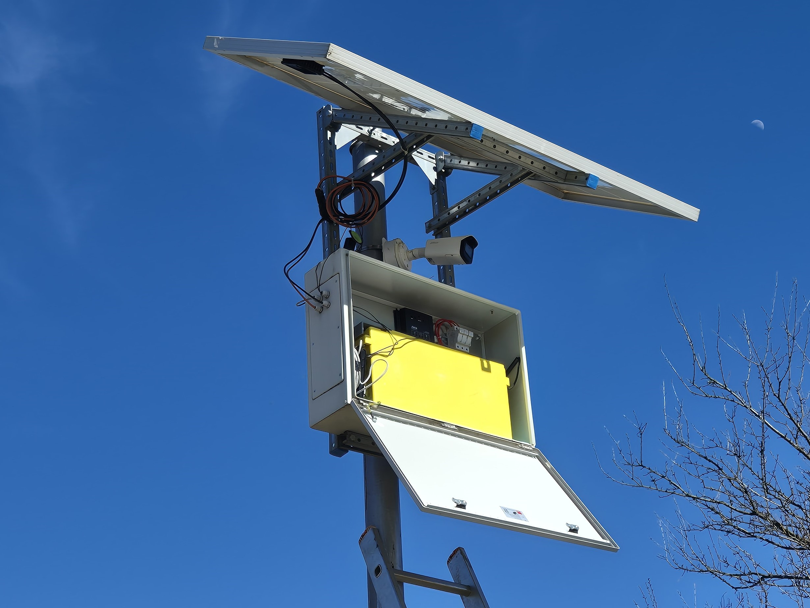
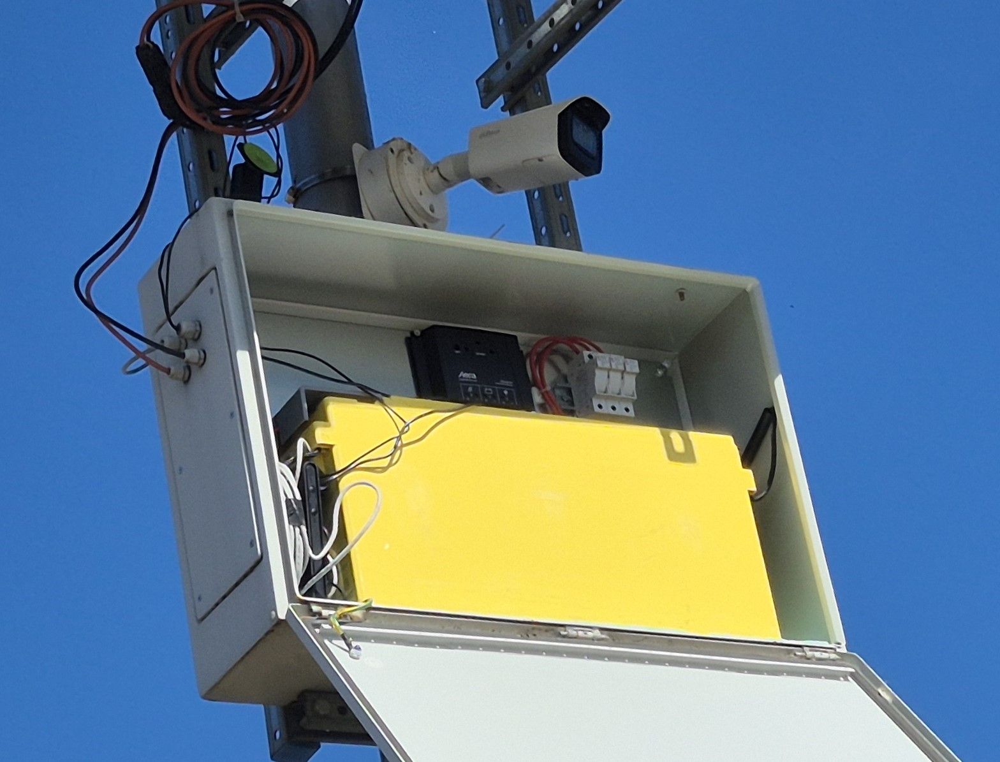
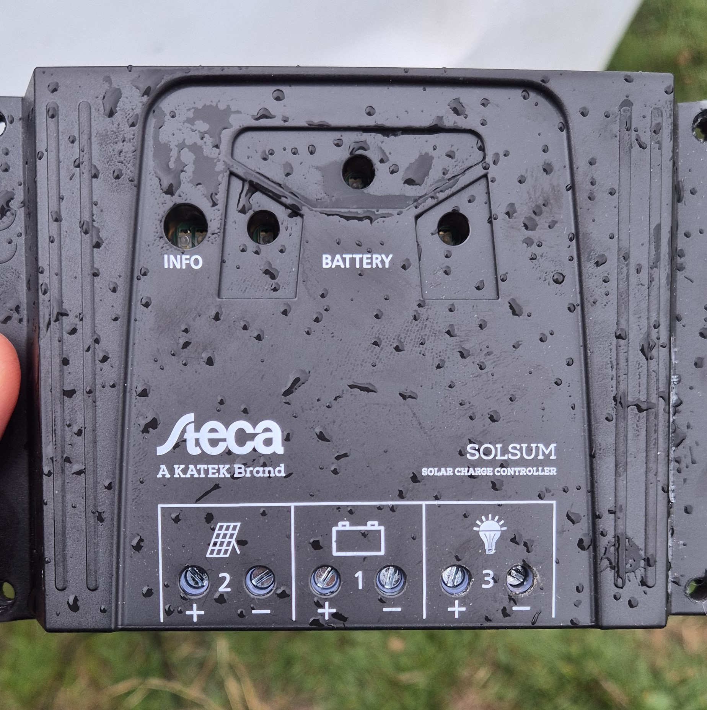
- Designed and deployed a fully autonomous solar-powered IP surveillance station in 2024; integrating a photovoltaic panel, 12V sealed battery, Steca Solsum 1010 charge controller, IP bullet camera, and NetBox cloud recorder into a single weatherproof off-grid system requiring no mains power or on-site storage.
- Wired the solar power circuit across all three controller terminal groups; panel input, battery charge, and load output; configuring the Solsum 1010 to switch automatically between solar and battery power at dusk and dawn without manual intervention.
- Configured the IP camera and NetBox cloud recording unit over TCP/IP; assigning static addressing, setting stream parameters and recording schedules, and verifying cloud connectivity before sealing the enclosure and handing the system over as live.
- Responded to a reported system outage in 2026 under time pressure with an active surveillance gap; drove to site and conducted a structured voltage-based fault-finding process that isolated the fault to the Solsum 1010 charge controller, ruling out the panel, battery, and wiring before component replacement.
- Replaced the faulty Steca Solsum 1010 in the field; disconnecting, removing, and rewiring the replacement unit across all terminal groups, then verifying correct output voltage to the load before reconnecting the camera and confirming cloud recording was active.
- Closed the maintenance intervention with a completed service report and ticket in the company's field management system; documenting the fault diagnosis, component replaced, test results, and system status at handover.
Convention
AI Health Screening Deployment — Government School Convention
Smart Device Integration & Field Installation — Longse FK02GYW / Multi-Site, 2025
Controlling the spread of infection in a school environment is not a
software problem. It is a physical one; hundreds of pupils passing through
the same entry gates every morning, with no practical way to screen each
one quickly enough to avoid a bottleneck. The solution needs to be fast,
non-invasive, and reliable enough to operate unattended across multiple
sites simultaneously.
Under a formal government convention, our team was
commissioned to deploy the Longse Smart Device 2000 FK02GYW,
an AI-powered face recognition and contactless temperature measurement
terminal, across several schools in the region. The objective was clear:
equip every entry gate with an automated health screening point capable
of identifying pupils with elevated body temperature in real time, issuing
a fever alert before they entered the building, and reducing the risk of
infection spreading through the student population.
The FK02GYW combines a deep learning face recognition engine
with an integrated infrared thermal sensor, performing contactless face
temperature measurement in under a second and triggering an audible and
visual fever warning if the reading exceeds the configured threshold. The
device communicates over the local network via RJ45 Ethernet
and supports peripheral integration through RS485 serial
interfaces, allowing it to interface with access control systems
and gate barriers where required.
At each school, the installation began with the physical layer: running
the necessary data cabling and electrical wiring to every
entry gate position, providing each unit with a clean power feed and a
network connection. The devices were then mounted at each gate on their
adjustable pedestal stands, positioned at the correct height for reliable
face detection across the range of pupil ages present at the site. Each
unit was commissioned individually; network configuration,
temperature threshold calibration, and fever alert parameters
were set and verified before the device was handed over to the school
administration as operational.
Across all sites, the deployment produced a consistent, automated first
line of health screening at every school entry point; a system that works
silently in the background every morning, without requiring staff
intervention, and flags the cases that need attention before they reach
the classroom.
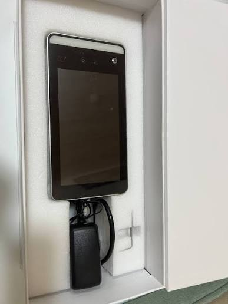
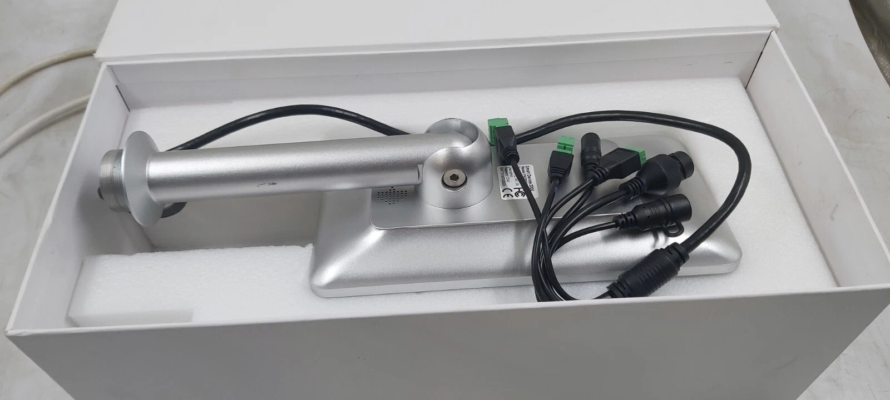
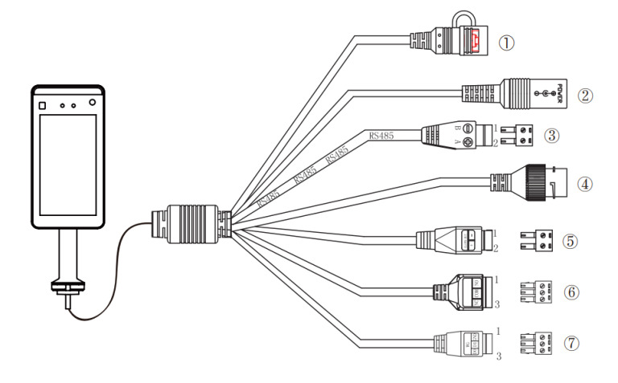
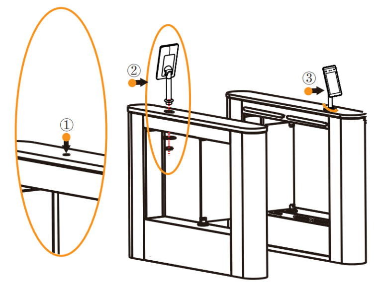
- Deployed the Longse FK02GYW AI face recognition and contactless temperature measurement system across multiple schools under a government health convention; installing one unit at every entry gate to provide automated, real-time fever screening of pupils before classroom entry.
- Carried out the full physical installation at each site; running data cabling and electrical wiring to every gate position, providing each device with a dedicated power feed and RJ45 network connection before mounting and commissioning.
- Mounted each FK02GYW unit on its adjustable pedestal stand at the correct face-detection height for the relevant pupil age group, ensuring reliable AI recognition and accurate infrared temperature readings across the full range of subjects at each school.
- Configured each device individually on site; setting network parameters, fever alert temperature thresholds, and warning output behaviour and verifying correct operation before handover to school administration.
- Wired RS485 serial interfaces and peripheral connectors where required to integrate the device with existing entry gate and access control infrastructure at each installation point.
- Completed the multi-site rollout to schedule, delivering an automated health screening layer at every school entry point that operates unattended each morning without requiring dedicated staff presence at the gate.
Deployment
Radar Speed Warning Display Deployment — Public Road Infrastructure
Smart Road Equipment & Field Installation — Dahua DHI-ITACS-024SA-JB, 2025
Speed limit signs tell drivers what the limit is. Radar speed warning
displays tell them what they are actually doing — and that difference,
in the seconds before a driver decides to brake, is where road safety
interventions have their most immediate effect.
This project involved the deployment of Dahua Radar Speed Warning
Screens (DHI-ITACS-024SA-JB) across several road entry points
outside urban areas; locations where vehicle speeds tend to be highest
and where a passive sign alone is the least effective tool available.
The DHI-ITACS-024SA-JB operates on a 24.150 GHz radar centre
frequency, detecting vehicle speeds from 5 to 199 km/h with
an accuracy rating of ±1 km/h, and displaying the reading in real time
on a large-format LED matrix panel visible from a significant approach
distance.
Every panel was tested and verified before installation;
the internal electronics were inspected, the LED display matrix powered
and validated, and the radar detection function confirmed to be operating
correctly. This pre-installation testing discipline ensures that no
fault is discovered after a unit is already mounted at height on a road
pole, where fault-finding becomes significantly more complex and
time-consuming.
Installation was carried out at road-side poles in live traffic
environments; each unit was secured to the pole with stainless steel
banding, all necessary 220V AC electrical wiring was
run and connected to the unit's power input, and the panel was
aligned toward the approaching traffic lane to maximise radar detection
range and LED display visibility. Working at height on an active road
required strict adherence to safety procedures
throughout; ladder positioning, traffic awareness, and two-person
coordination were maintained at every installation point.
The completed installations deliver a permanent, automated speed
awareness tool at each road entry point; one that requires no operator
presence, responds to every vehicle that passes, and provides drivers
with the one piece of information most likely to change their behaviour
in the moment.
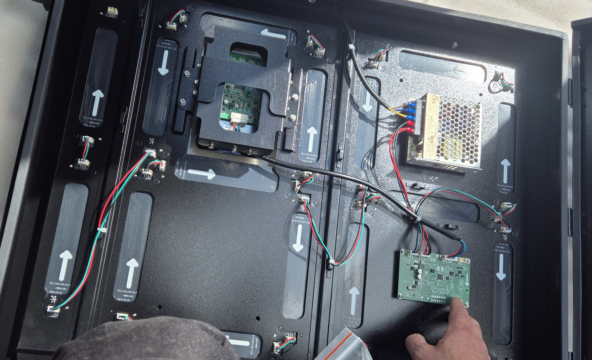
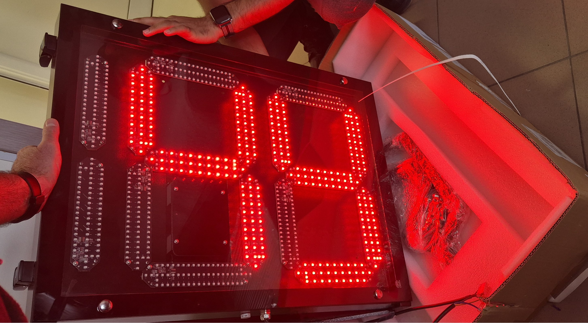
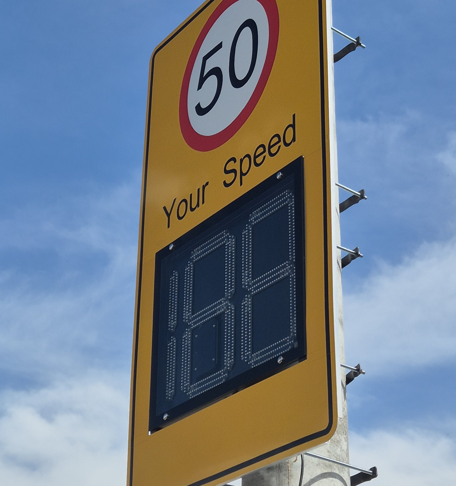
- Deployed Dahua DHI-ITACS-024SA-JB radar speed warning displays across multiple road entry points outside urban areas; providing drivers with real-time vehicle speed feedback at locations where passive signage alone is least effective.
- Performed full pre-installation testing on every panel before field deployment; inspecting internal electronics, validating the LED matrix display, and confirming radar detection function to eliminate the risk of discovering faults after mounting at height on a live road.
- Carried out all 220V AC electrical wiring at each installation point; running and connecting the power feed to each unit with conduit-protected cabling routed cleanly down the pole structure.
- Mounted and aligned each display unit on road-side concrete poles using stainless steel banding, orienting the radar sensor and LED panel toward the approaching traffic lane for maximum detection range and display visibility.
- Maintained strict road-side safety procedures throughout all installations; managing ladder positioning, two-person working discipline, and active traffic awareness at every site across the deployment.
Technician
Full-Building IT Infrastructure Deployment — 8-Floor Commercial Office Tower
Structured Cabling & Network Infrastructure — CAT6 / Rack Servers / Patch Panels, 2025
When a building has eight floors and no network infrastructure at all, the
work does not begin at a screen. It begins at the ground floor with a cable
reel, a plan, and the full weight of knowing that every decision made in the
walls today will determine how the building communicates for years to come.
As lead technician on this project, I coordinated a small
team to design and deploy the complete IT infrastructure of a
commercial office building from the ground up, floor by
floor, across all eight levels. The scope covered every layer of the
physical network: cable pulling, conduit routing, rack installation,
patch panel termination, labelling, and connectivity validation before
handover to the client.
The cabling backbone of the project was CAT6 structured cabling,
pulled through corrugated conduits and metal cable trays routed along
ceilings and down partition walls throughout each floor. Every run was
planned to avoid interference with the building's electrical and plumbing
routes, and every conduit exit point was positioned ahead of the partition
wall finishing, so that the cable infrastructure was embedded cleanly
within the building structure rather than surface-mounted as an afterthought.
The photos tell the story of that in-wall phase; open metal stud frames,
corrugated conduits bundled and labelled at junction boxes, cable runs
descending through floor penetrations to the next level down, and ceiling
tray sections packed with data and power feeds moving across the open slab
before partitioning closed everything in.
Each of the eight floors received its own dedicated rack server
enclosure, housing a patch panel terminating all horizontal cable
runs from that floor's outlet points. This per-floor distribution design
keeps fault domains contained, makes future moves and adds straightforward,
and gives the building a fully managed network architecture rather than a
centralised star topology that would have required significantly longer
cable runs from a single point.
Every cable run was labelled and documented at both ends
throughout the installation, not at the end of it; a discipline that saved
significant time during the termination and testing phase. Connectivity was
validated at each floor before the team moved on, catching any physical
layer faults while the walls were still accessible. The project was completed
with full technical documentation covering the cabling
schedule, rack layouts, patch panel assignments, and floor-by-floor test
records, handed over as part of the building's IT commissioning package.
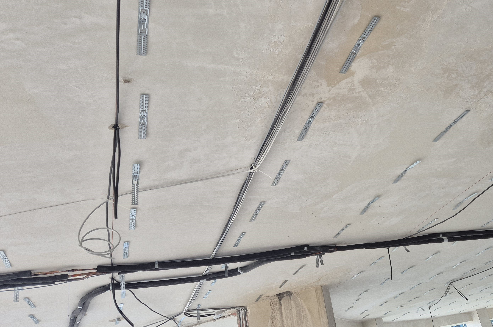
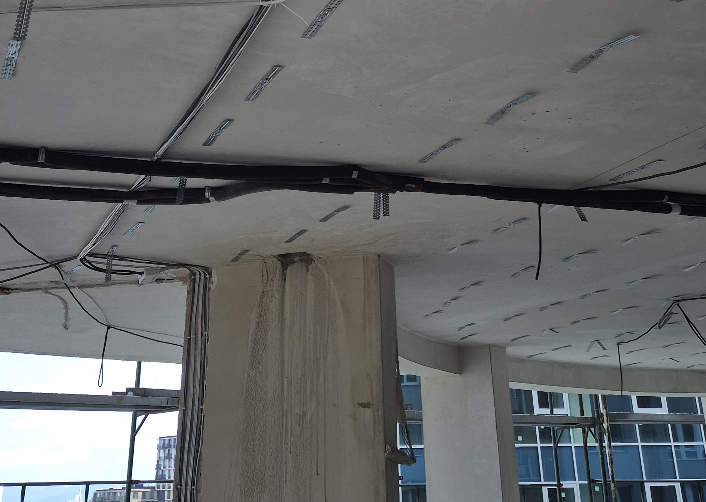
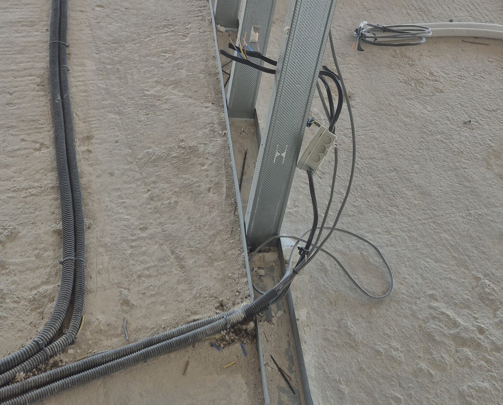
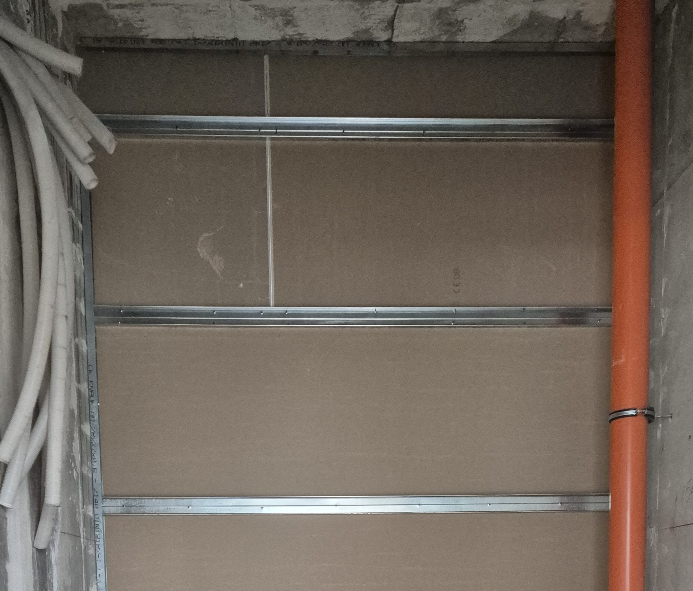
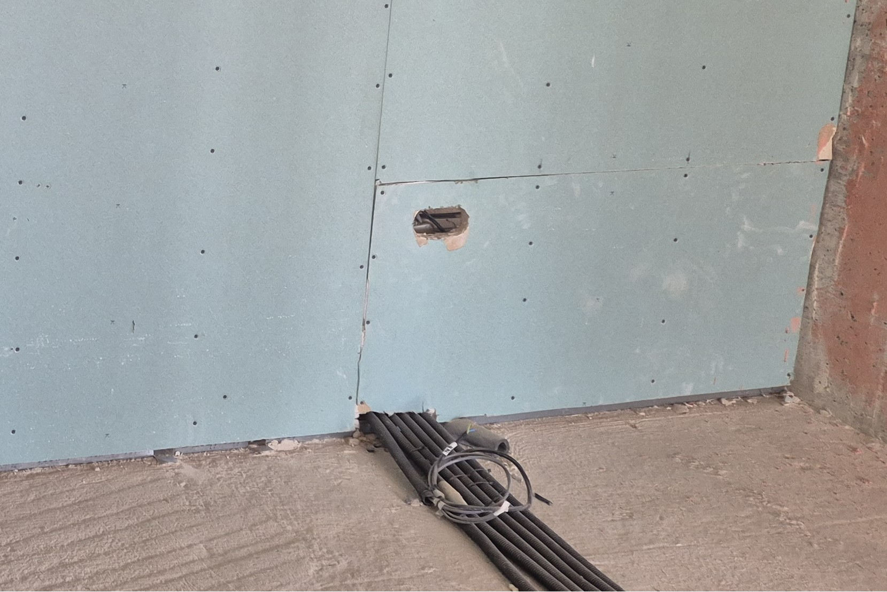
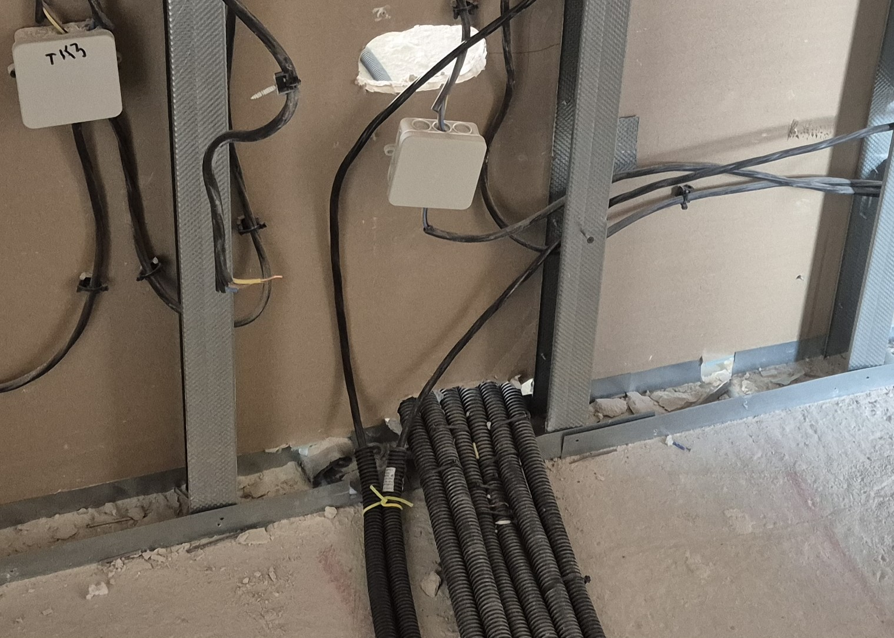
- Led a small technical team in the full IT infrastructure deployment of an 8-floor commercial office building from bare concrete to commissioned network; covering cable pulling, conduit routing, rack installation, patch panel termination, labelling, and connectivity validation across every floor.
- Pulled and routed CAT6 structured cabling throughout all eight floors via corrugated conduits and ceiling cable trays, coordinating routing paths around electrical and plumbing infrastructure and embedding all data cabling within wall cavities before partition finishing.
- Installed a dedicated rack server enclosure on each floor, housing a patch panel terminating all horizontal cable runs from that level; a per-floor distribution design that contains fault domains, simplifies future changes, and avoids the long cable runs inherent to centralised topologies.
- Enforced a label-at-installation discipline throughout the project, tagging every cable run at both ends as it was pulled rather than retrospectively; a practice that significantly reduced time during the termination and fault-finding phases.
- Validated connectivity floor by floor before partition walls were closed, ensuring all physical layer faults were identified and corrected while the cable infrastructure remained accessible.
- Operated throughout under formal construction site safety procedures; managing ceiling-level work, floor penetration handling, and multi-trade coordination across an active building site.
- Produced and delivered a complete IT commissioning documentation package at handover; including the cabling schedule, rack layouts, patch panel port assignments, and floor-by-floor test records for the client's building records.
Deployment
UniFi Wi-Fi Network Deployment — Multi-Room Commercial Installation
Field Network Engineering — Ubiquiti UniFi 6 / Cloud Gateway Ultra, 2025
Most network projects start on a screen — topology diagrams, IP plans, configuration
templates. This one started on a floor plan and a cable reel.
The client was a retail business operating across multiple rooms on a single floor,
struggling with inconsistent wireless coverage and a network infrastructure that had
grown organically without any real architecture behind it. The brief was straightforward:
deliver reliable, managed Wi-Fi across every corner of the space — and do it cleanly,
without disrupting day-to-day operations.
The solution was built around the Ubiquiti UniFi ecosystem:
three UniFi 6 Professional access points for dual-band
wireless coverage, anchored by a UniFi Cloud Gateway Ultra
as the network controller and router. Before any device was mounted or configured,
the physical layer had to be right — which meant pulling and routing
CAT5e FTP cabling through the space, terminating every run
cleanly, and validating each drop with a cable tester before anything
powered on. Connectivity that isn't verified at the physical layer will
always cause problems at the logical layer.
With the cabling qualified, the UniFi stack was brought online. The Cloud Gateway
Ultra was commissioned as the network core — handling routing, DHCP, and
cloud-managed controller functions from a single compact unit. Each access point
was adopted into the UniFi Network application, configured with
consistent SSIDs, band steering, and transmission power settings
tuned for the room layout, then ceiling-mounted at positions chosen to eliminate
dead zones without creating unnecessary channel overlap between units.
The final network delivered seamless roaming across all rooms, centralised
visibility through the UniFi dashboard, and a clean physical installation with
no exposed cable runs. The project was closed with a completed
service report and ticket closure in the company's field
service management system — documenting the topology, device MACs, IP
assignments, and test results for the client's records.
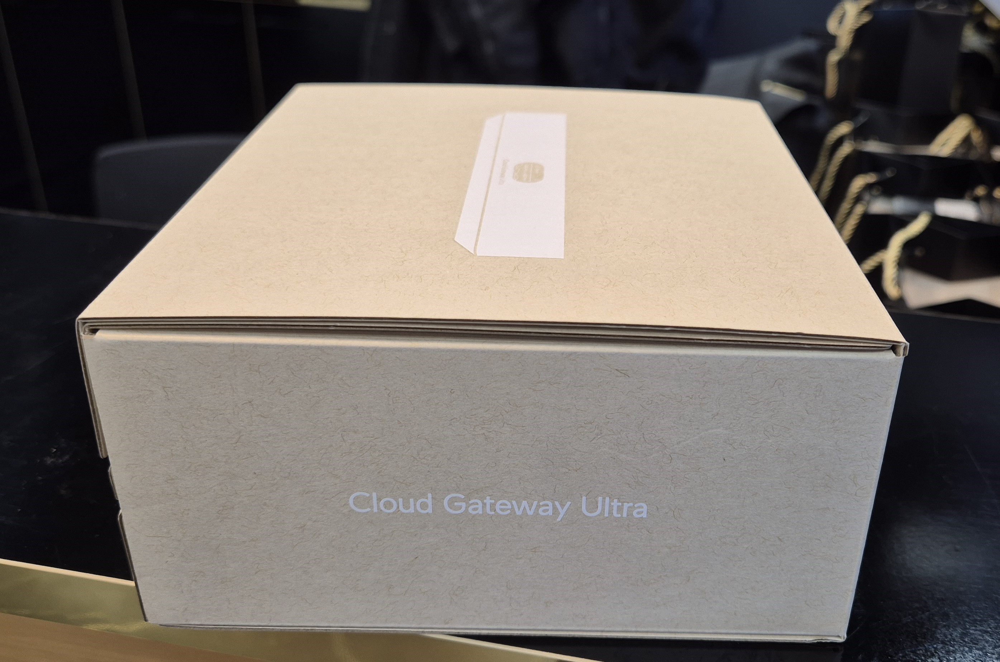
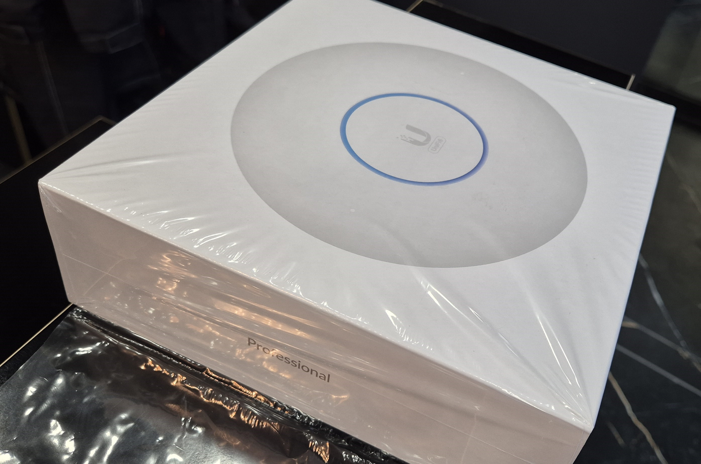
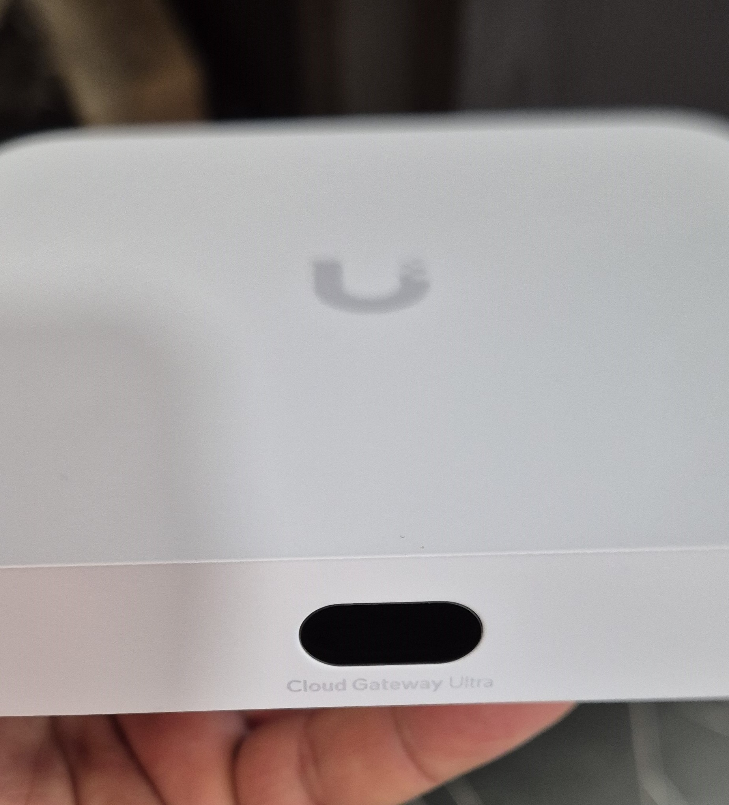
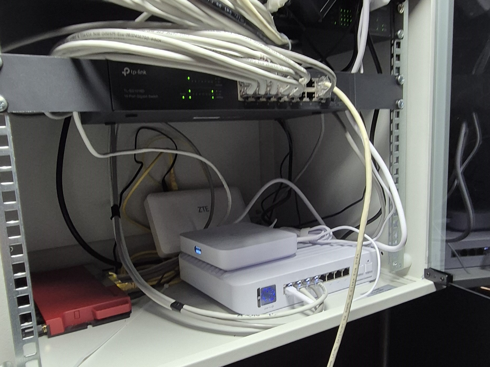
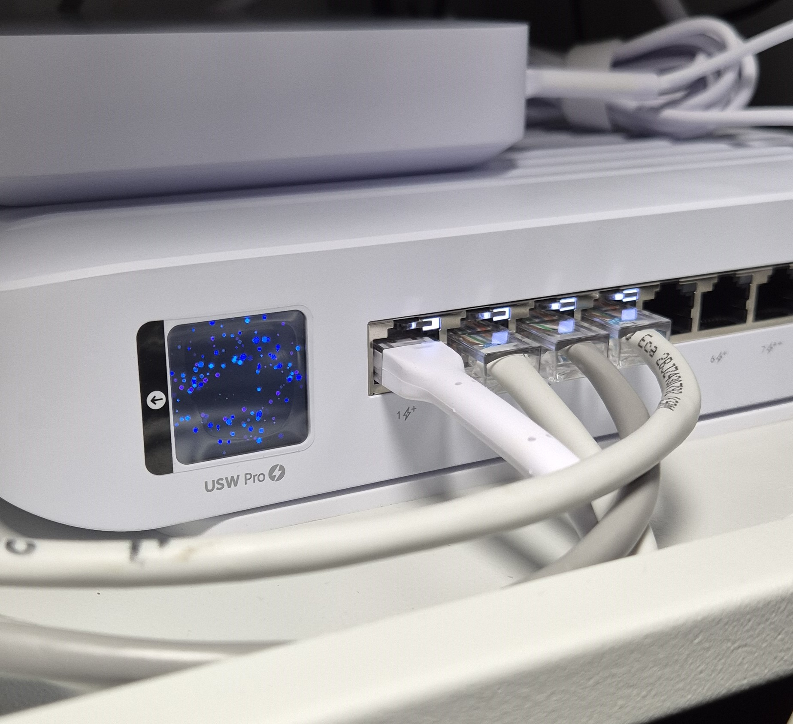
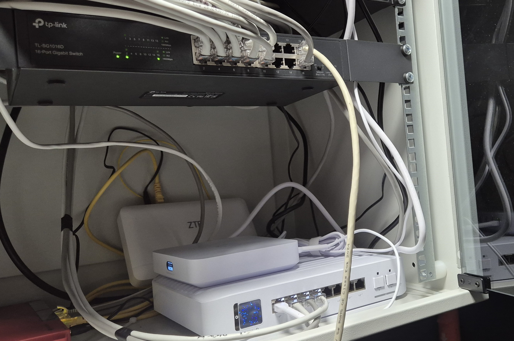
- Deployed a fully managed UniFi Wi-Fi network across a multi-room retail space — installing three UniFi 6 Professional access points and a UniFi Cloud Gateway Ultra as the network controller and routing core.
- Pulled and routed CAT5e FTP cabling throughout the installation space, terminating every run and validating each drop with a cable tester before device commissioning — ensuring physical layer integrity before any logical configuration was applied.
- Commissioned the UniFi Cloud Gateway Ultra as the network core, configuring routing, DHCP, and the UniFi controller application from a single managed device serving the entire site.
- Adopted and configured all three access points within the UniFi Network application — applying consistent SSIDs, band steering, and per-AP transmit power settings tuned to eliminate dead zones without causing inter-AP channel interference.
- Planned access point placement based on the room layout to achieve seamless roaming coverage across all areas of the retail floor, with no signal gaps between zones.
- Organised the network rack cleanly, integrating the UniFi stack alongside the existing TP-Link gigabit switch and ISP modem with labelled, routed patch cables for maintainability.
- Closed the project by completing a full service report and ticket in the company's field service management system — documenting network topology, device addresses, IP assignments, and cable test results for the client record.
Project
ANPR Road Surveillance System — Government Infrastructure Deployment
Field Network Engineering — Dahua Smart ANPR / PoE / Cloud Recording, 2025
There are projects where the margin for error is near zero. When the client
is a government agency and the system being deployed controls vehicle access
on a public road in a rural area, every decision made on site carries
real operational weight.
This project was carried out in collaboration with the CAT service,
deploying a complete Automatic Number Plate Recognition (ANPR)
surveillance system at a government-managed road control point.
The scope covered the full deployment lifecycle: driving to the remote
site, assessing the installation environment, mounting and cabling the
cameras, assembling the rack infrastructure, and commissioning the
entire system end to end.
The camera layer was built around two Dahua Smart ANPR cameras
(DHI-ITC413-PW4D-IZ1), positioned at the road entry and exit
points to capture and read vehicle number plates in real time under
outdoor conditions. A third face detection camera was
installed inside the control office to cover personnel identification
at the checkpoint. All three units are PoE-powered, which meant the
entire camera layer ran over a single structured cabling infrastructure
with no separate power wiring required at each mount point.
The back-end infrastructure was built inside a network rack
assembled and wired on site: a PoE switch to power and
connect all camera feeds, and a NET Box cloud recording unit
to handle continuous video storage and remote access for the supervising
authority. TCP/IP addressing and port configuration were applied to each
device to ensure clean communication between the cameras, the recorder,
and the remote monitoring platform. Basic cybersecurity checks were
carried out before the system was handed over, covering default credential
changes, network isolation, and access control verification.
Working on a government road infrastructure site also meant operating under
strict safety procedures throughout; outdoor mounting at
height, cable routing across an active checkpoint, and coordination with
site personnel were all part of the execution. The project was closed with
complete technical documentation covering the network
topology, device inventory, IP plan, and test results, maintained and
submitted as part of the official service record.
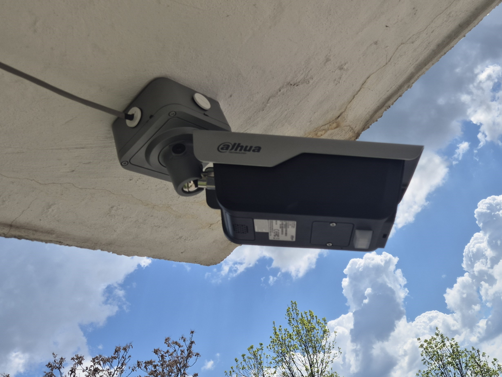
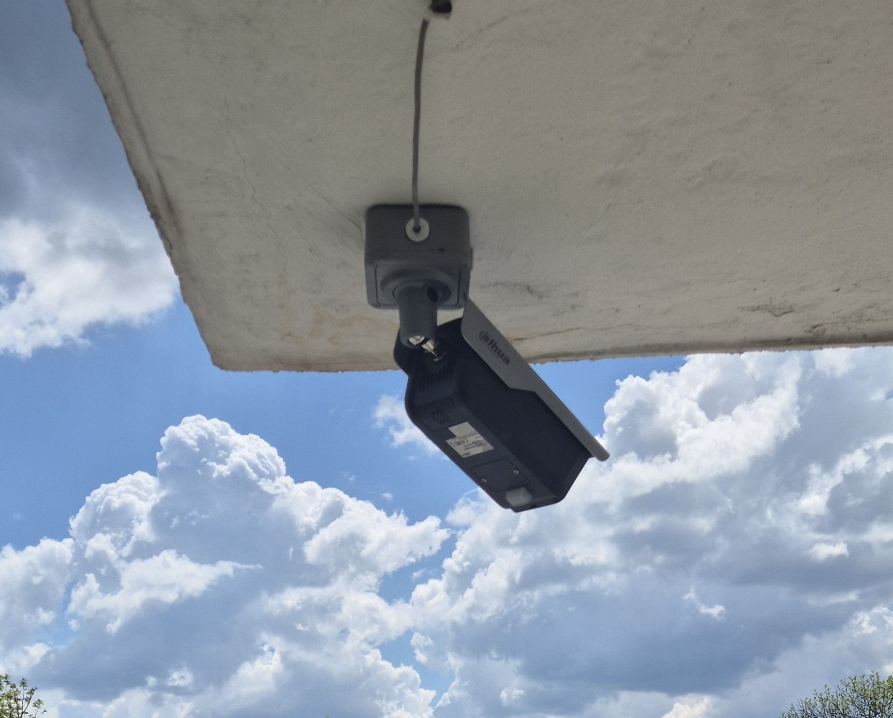
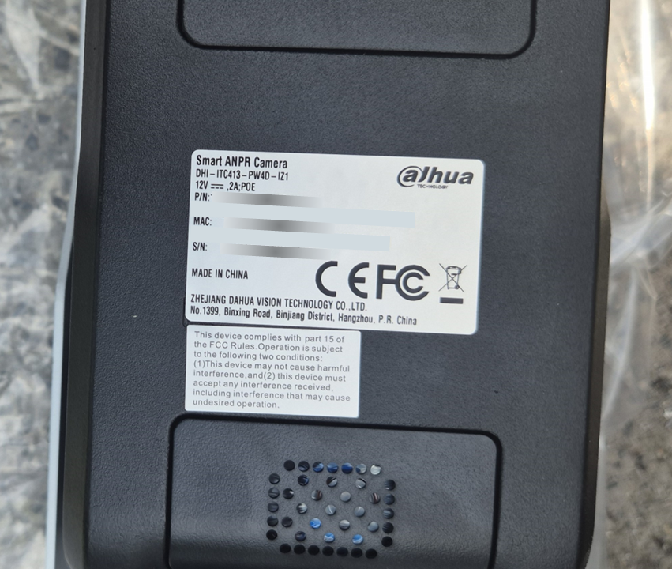
- Deployed a complete ANPR road surveillance system for a government road control point in a rural area, in collaboration with the CAT service; covering two outdoor Dahua Smart ANPR cameras, one indoor face detection camera, and a full rack back-end infrastructure.
- Installed and aligned two Dahua DHI-ITC413-PW4D-IZ1 Smart ANPR cameras at vehicle entry and exit positions under outdoor conditions, mounting each unit through a PoE-fed bracket with cable routing concealed through the ceiling structure.
- Assembled the on-site network rack from scratch; integrating a PoE switch to power and aggregate all camera feeds, and a NET Box cloud recording unit to deliver continuous video storage and remote access for the supervising authority.
- Applied TCP/IP addressing and port configuration across all networked devices, ensuring clean and verified communication between the cameras, the recorder, and the remote monitoring platform before handover.
- Performed basic cybersecurity checks prior to system handover; including default credential replacement, network access control review, and device isolation verification to meet government deployment standards.
- Operated throughout under formal site safety procedures; managing outdoor mounting at height, active checkpoint cable routing, and on-site coordination with government personnel across the full installation day.
- Produced and submitted complete technical documentation for the project record; covering network topology, device inventory, IP assignment plan, and connectivity test results as required by the service agreement.
System
IP Video Intercom & Access Control System — Modern Kindergarten
IP Intercom · PoE Network · Electromagnetic Lock — Dahua VTH2611L-WP / DHI-VTO6521H, 2024
A kindergarten has one security requirement that overrides every other:
only the right people get through the front door. Every parent dropping
off a child needs to be identified before entry is granted, every room
needs to remain in communication with the reception, and the staff needs
to be able to see, speak, and respond from anywhere inside the building
without needing to walk to the entrance every time a visitor arrives.
This project delivered exactly that; a fully networked
IP video intercom and electronic access control system
across a modern kindergarten, integrating ten indoor room monitors,
a smart entrance door station, and an electromagnetic door lock into
a single coherent communication and security infrastructure.
At the entrance, a Dahua DHI-VTO6521H Apartment Door Station
was installed as the visitor-facing unit; a flush-mounted IP panel
combining a wide-angle camera, a colour touch display, a numeric keypad
for PIN entry, and a built-in card reader for RFID-based access. The
door station connects over the local IP network and communicates
simultaneously with all ten indoor monitors, allowing any authorised
staff member in any room to see the visitor, speak with them, and
remotely release the door from their monitor screen. Entry is controlled
by a DC 12V electromagnetic lock wired directly to the
door station's LOCK1 output terminal; the lock holds the door closed under
power and releases only when a valid access event is confirmed, whether by
PIN, RFID card, or remote monitor release.
The ten Dahua VTH2611L-WP Wi-Fi Indoor Monitors were
mounted in each room throughout the kindergarten; each unit offering a
4.3-inch colour touch screen for live video display, two-way audio
communication with the door station, group call capability across all
monitors simultaneously, alarm integration, and IPC surveillance feed
access. All monitors are Standard PoE-powered, which
simplified the installation significantly; a single CAT5e FTP run to
each monitor location carries both data and power, eliminating the need
for separate electrical feeds at each room position.
The network backbone was built around a 16-port PoE switch
added to the existing rack server in the building, providing powered
ports for all ten monitors and the door station from a single managed
switch. CAT5e FTP structured cabling was pulled from
the rack to every device position throughout the building, with cable
moulures used for clean surface routing in finished rooms. All devices
were configured over TCP/IP after installation; IP
addressing, door station pairing, monitor registration, call group
assignments, and lock output parameters were set and verified before
the system was handed over to the kindergarten staff.
Following handover, user support and technical assistance
was provided to the staff directly on site; walking them through the
daily use of the monitor screens, the door release procedure, and the
RFID card registration process, ensuring the team was confident and
independent with the system before the technicians left.
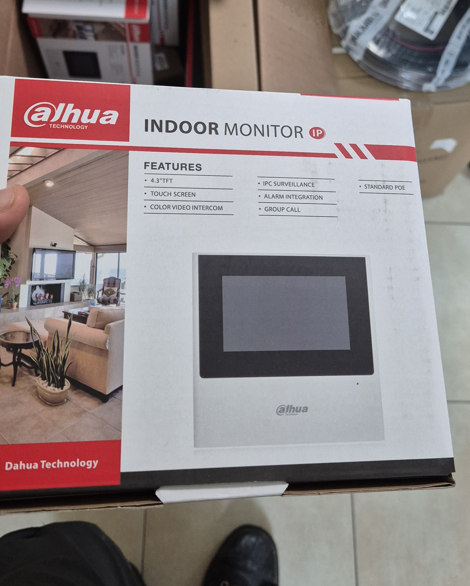
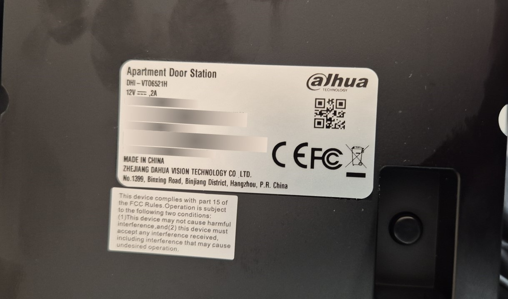
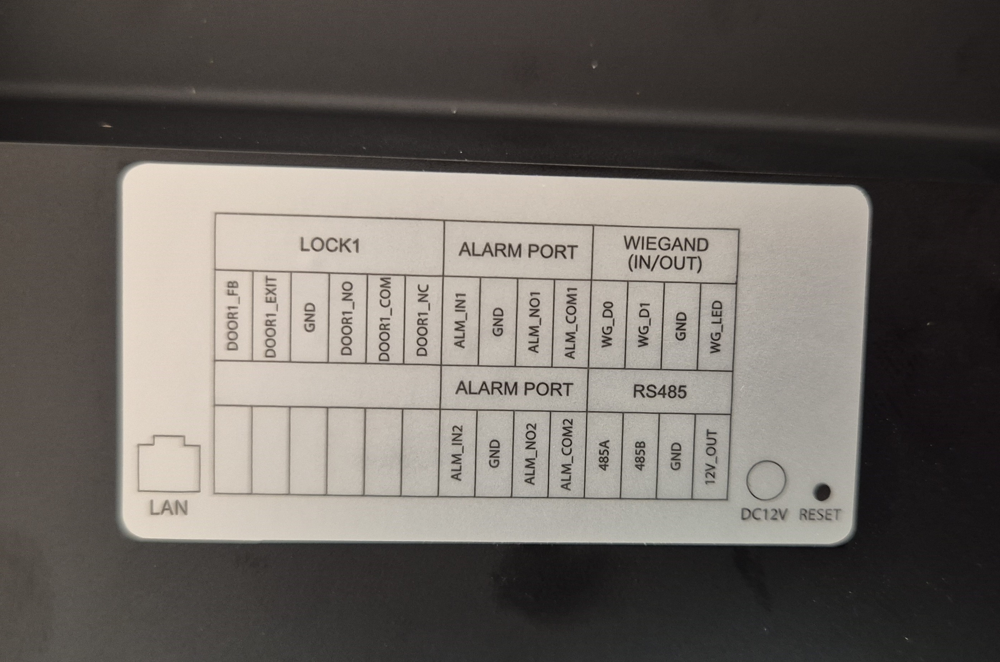
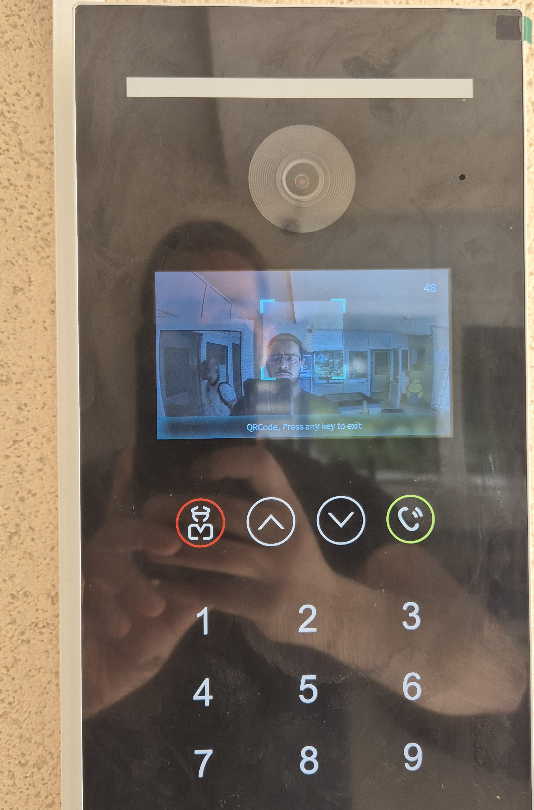
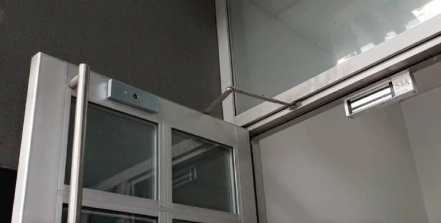

- Deployed a complete IP video intercom and electronic access control system across a modern kindergarten; integrating a Dahua DHI-VTO6521H entrance door station, ten Dahua VTH2611L-WP indoor monitors, and a DC 12V electromagnetic lock into a single networked security and communication system.
- Installed and wired the Dahua DHI-VTO6521H Apartment Door Station at the kindergarten entrance; connecting the LOCK1 output terminals to the electromagnetic door lock for remote release, and configuring RFID card reader, PIN keypad, and visitor camera functions for parental identification at entry.
- Wired the DC 12V electromagnetic lock to the door station's LOCK1 output, configuring the fail-secure contact logic so the door releases only on a confirmed access event from the door station or a remote indoor monitor, and remains locked at all other times.
- Mounted and configured ten Dahua VTH2611L-WP Wi-Fi Indoor Monitors throughout the kindergarten rooms; each providing live video feed from the entrance camera, two-way audio with the door station, group call across all monitors, and remote door release from any room in the building.
- Installed a 16-port PoE switch in the existing rack server; providing powered network ports for all ten monitors and the door station from a single managed switch, eliminating the need for independent power supplies at each device location.
- Pulled CAT5e FTP structured cabling from the rack to every device position throughout the building, routing neatly through cable moulures in finished rooms and terminating each run at the PoE switch patch ports.
- Configured all devices over TCP/IP after installation; assigning static addresses, pairing monitors to the door station, registering call groups, and verifying end-to-end audio and video quality before system handover.
- Provided on-site user support and staff training at handover; demonstrating the daily use of the indoor monitors, the visitor identification and door release workflow, and the RFID card registration process, leaving the kindergarten team fully autonomous with the system.